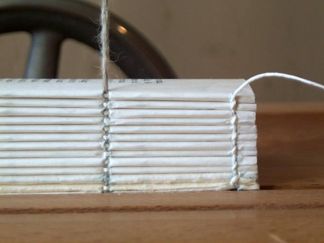
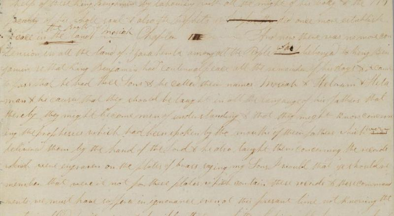

Words of Mormon is often referred to as “a bridge” between the Small Plates of Nephi and the Large Plates. Even though Words of Mormon is, indeed, a bridge between records, there is complexity involved in the text and differing opinions regarding the structure and make-up of this book.
After a simple reading of the eighteen verses that comprise the text of Words of Mormon, one notices that the first eleven verses (1:1–11) are written using only first- person pronouns. There are twenty-two uses of the pronoun “I,” another twenty-two uses of the pronoun “we,” and one use of the pronoun “us” in these verses. They contain no third-person pronouns. Then, in the remaining verses (1:12–18) only third-person pronouns are used; no first-person pronouns are found in the latter half of the book.
There is a significant shift in the narrative half-way through Words of Mormon. It appears that something worthy of attention is happening at the narrative mid-point of Words of Mormon.
Royal Skousen, who has done by far the most extensive work on the manuscripts and texts of the Book of Mormon, thinks that the prophet Mormon personally wrote (not abridged) Words of Mormon 1:1–11 as his final farewell address. Skousen emphasizes that the first-person pronouns in the first half of Words of Mormon and the absence of them in the second half is a clue that something happened. It is important to note that the book prior to Words of Mormon is Omni—the last book included by Mormon from the Small Plates of Nephi. The book immediately following Words of Mormon is Mosiah—Mormon’s abridgement of Mosiah’s reign from the Large Plates.
Remember that the first book on the Large Plates was the book of Lehi. However, Lehi’s record was lost when Martin Harris lost the first 116 pages that were translated from that record, and it appears that a very small portion of what was originally the beginning translation of Mosiah was not lost with those 116 pages.
When Martin Harris took the 116 printed pages from Joseph, he would not have taken a stack of collated printed pages for the Book of Mormon; he would instead have taken a “gather” (Figure 5). A “gather” is made by “gathering” several large sheets of printer’s paper that may appear to be printed out of order, folding the pages in half lengthwise and then tying the pages together with a string. When binding the volume, the gather would be folded or cut in half, resulting in a final stack of pages that are collated in proper order for the volume being printed. A printed volume may be completed in one gather or any number of gathers, depending on the length of the volume. There would have been several gathers that were put together in making the completed volume of the Book of Mormon.
It would have been highly unlikely that what was written on the gather that Harris took ended exactly at the end of the book of Omni or exactly at the end of Words of Mormon.
Therefore, there would have been text from the original translation from the Large Plates that Martin Harris didn’t lose. That means that there would have been something

that Martin Harris did not take with him that had already been translated and that remained with Joseph. Maybe it was just a small part—perhaps a few verses.
Figure 5 Twelve gatherings being bound in a book. Photo by Colporteur via Wikimedia Commons.
By close examination of the Printer’s Manuscript of the Book of Mormon, Royal Skousen discovered a possible explanation for the shift in narrative from first-person to the third- party account in Words of Mormon. There were two Book of Mormon manuscripts: 1) the Original Manuscript which was written by scribes as Joseph Smith dictated his translation from the golden plates, and 2) the Printer’s Manuscript, which was a copy of the original manuscript made by Oliver Cowdery for use by the printer. We do not have the Original Manuscript of the words of Omni, the Words of Mormon, or the first part of the Book of Mosiah. It would be useful if we did. All we have to work with is Oliver Cowdery’s Printer’s Manuscript. However, what is left of the printer’s manuscript is still very helpful.
Below is a copy of the page from the Printer’s Manuscript made by Oliver Cowdery showing the section from Words of Mormon where there is a narrative change (Figure 6). What is on the Printer’s Manuscript has fascinated textual scholars in the last couple of years. Look at where the text reads, “Benjamin, by laboring with all the might of his body and the faculty of his whole soul, and also the prophets, did once more establish peace in the land.” This is the last verse of Words of Mormon in printed volumes of the Book of Mormon. After the word “land,” Oliver Cowdery wrote the word “Chapter” and followed that by the Roman numeral III. Then, Cowdery put a little squiggle and wrote, “And now there was no more contention in all the land of Zarahemla . . .” This is what we now have as verse 1 from the book of Mosiah. Then, sometime after transcribing the Original Manuscript to create the Printer’s Manuscript, Cowdery

crossed out the Roman numeral III, changed it to a Roman numeral I (Chapter I), and inserted a notation “Book of Mosiah.” This likely indicates that at one point, what was initially called Chapter 3 began with the text that is now Mosiah 1:1. And, what was originally the last part of the original Mosiah chapter 2 (perhaps on page 117 of what was left when Harris took the 116-page gather) was appended to Words of Mormon by Oliver Cowdery and Joseph Smith after the 116 pages were lost. Thus became the text we have today. In the Preface to the 1830 edition of the Book of Mormon, Joseph Smith spoke of these “one hundred and sixteen pages” that were “stolen and kept from me, notwithstanding my utmost exertions to recover it again.”
Mormon’s actual words may thus end at verse 11. Verses 12–18 were then what remained of the Large Plates translation after Martin Harris took and lost the 116 pages.
These seven verses should be read as part of the introductory material initially found in the book of Mosiah.
Figure 6 Printer's Manuscript of the Book of Mormon, showing where Oliver Cowdery "Chapter III" to "Chapter I".
Image via the Joseph Smith Papers website. http://josephsmithpapers.org/.
When Joseph Smith received possession of the plates again, after they had been taken back by the Angel Moroni in 1828 because of issues arising from the lost 116 pages that summer, Smith received a revelation concerning how to go forward with the translation process. In D&C 10:41 (emphasis added), the Lord instructed Joseph: “Therefore, you shall translate the engravings which are on the plates of Nephi, down even till you come to the reign of king Benjamin, or until you come to that which you have translated, which you have retained.”
The few verses that comprise the text of Words of Mormon give us a bigger picture of the composition of the Book of Mormon. It is really quite remarkable that this, like so many other things, ends up being a very strong confirmation of the accuracy of the Book of Mormon, of its miraculous coming forth, and of the way in which the dictation occurred under difficult circumstances. It is hard enough for us to read the record and figure out what happened. Imagine Joseph Smith simply dictating these segments and putting them all together in the way that they all came through and making good sense.
Although the details of how this precisely happened continues to be explored, discussed, and debated, it is textually clear that there actually were two records—the Words of Mormon and the book of Mosiah—that collided at this particular juncture and at the point where Harris lost the 1828 translation of the large plates down to and into the first part of the book of Mosiah.